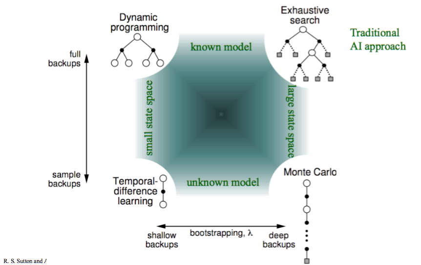
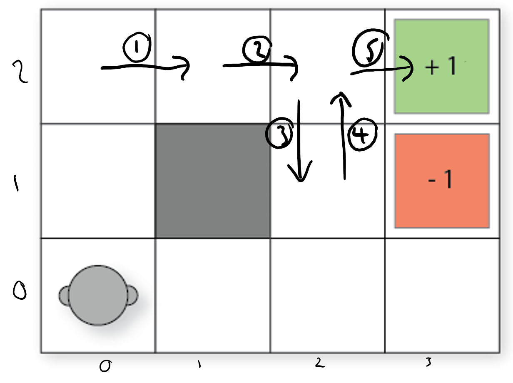

n-step Reinforcement Learning¶
Learning Outcomes
Manually apply n-step reinforcement learning approximation to solve small-scale MDP problems given a set of
Design and implement n-step reinforcement learning to solve medium-scale MDP problems automatically
Argue the strengths and weaknesses of n-step reinforcement learning
Motivation¶
In the previous sections on of this chapter, we looked at two fundamental temporal difference (TD) methods for reinforcement learning: Q-learning and SARSA.
These two methods have some weaknesses in this basic format:
Unlike Monte-Carlo methods, which reach a reward and then backpropagate this reward, TD methods use bootstrapping (they estimate the future discounted reward using \(Q(s,a)\)), which means that for problems with sparse rewards, it can take a long time to for rewards to propagate throughout a Q-function.
Both methods estimate a Q-function \(Q(s,a)\), and the simplest way to model this is via a Q-table. However, this requires us to maintain a table of size \(|A| \times |S|\), which is prohibitively large for any non-trivial problem.
Using a Q-table requires that we visit every reachable state many times and apply every action many times to get a good estimate of \(Q(s,a)\). Thus, if we never visit a state \(s\), we have no estimate of \(Q(s,a)\), even if we have visited states that are very similar to \(s\).
Rewards can be sparse, meaning that there are few state/actions that lead to non-zero rewards. This is problematic because initially, reinforcement learning algorithms behave entirely randomly and will struggle to find good rewards. Remember the Freeway demo from the previous lecture?
To get around these limitations, we are going to look at n-step temporal difference learning: Monte Carlo techniques execute entire traces and then backpropagate the reward, while basic TD methods only look at the reward in the next step, estimating the future wards. n-step methods instead look \(n\) steps ahead for the reward before updating the reward, and then estimate the remainder.
n-step TD learning comes from the idea used in the image below, from Sutton and Barto (2020). Monte Carlo methods uses ‘deep backups’, where entire traces are executed and the reward backpropagated. Methods such as Q-learning and SARSA use ‘shallow backups’, only using the reward from the 1-step ahead. n-step learning finds the middle ground: only update the Q-function after having explored ahead \(n\) steps.

Fig. 10 Reinforcement learning approaches (from Sutton and Barto (2020))¶
n-step TD learning¶
We will look at n-step reinforcement learning, in which \(n\) is the parameter that determines the number of steps that we want to look ahead before updating the Q-function. So for \(n=0\), this is just ‘standard’ reinforcement learning that we saw earlier in this chapter, and when \(n=1\), the algorithm looks one step beyond the immediate reward, \(n=2\) it looks two steps beyond, etc.
Both Q-learning and SARSA have an n-step version. We will look at n-step learning more generally, and then show an algorithm for n-step SARSA. The version for Q-learning is similar.
Discounted Future Rewards (again)¶
When calculating a discounted reward over a trace, we simply sum up the rewards over the trace:
We can re-write this as:
If \(G_t\) is the value received at time-step \(t\), then
In TD(0) methods such as Q-learning and SARSA, we do not know \(G_{t+1}\) when updating \(Q(s,a)\), so we estimate using bootstrapping:
That is, the reward of the entire future from step \(t\) is estimated as the reward at \(t\) plus the estimated (discounted) future reward from \(t+1\). \(V(s_{t+1})\) is estimated using the maximum expected return (Q-learning) or the estimated value of the next action (SARSA).
This is a one-step return.
Truncated Discounted Rewards¶
However, we can estimate a two-step return:
a three-step return:
or n-step returns:
In this above expression \(G^n_t\) is the full reward, truncated at \(n\) steps, at time \(t\).
The basic idea of n-step reinforcement learning is that we do not update the Q-value immediately after executing an action: we wait \(n\) steps and update it based on the n-step return.
If \(T\) is the termination step and \(t+n>T\), then we just use the full reward.
In Monte-Carlo methods, we go all the way to the end of an episode. Monte-Carlo Tree Search is one such Monte-Carlo method, but there are others that we do not cover.
Updating the Q-function¶
The update rule is then different. First, we need to calculate the truncated reward for \(n\) steps, in which \(\tau\) is the time step that we are updating for (that is, \(\tau\) is the action taken \(n\) steps ago):
This just sums the discounted rewards from time step \(\tau+1\) until either \(n\) steps (\(\tau+n\)) or termination of the episode (\(T\)), whichever comes first.
Then calculate the n-step expected reward:
This adds the future expect reward if we are not at the end of the episode (if \(\tau+n < T\)).
Finally, we update the Q-value:
In the update rule above, we are using a SARSA update, but a Q-learning update is similar.
n-step SARSA¶
While conceptually this is not so difficult, an algorithm for doing n-step learning needs to store the rewards and observed states for \(n\) steps, as well as keep track of which step to update. An algorithm for n-step SARSA is shown below.
Algorithm – n-step SARSA
Input: MDP \(M = \langle S, s_0, A, P_a(s' \mid s), r(s,a,s')\rangle\), number of steps \(n\)
Output: Q-function \(Q\)
Initialise \(Q\) arbitrary; e.g., \(Q(s,a)=0\) for all \(s\) and \(a\)
Repeat (for each episode)
\(\quad\quad\) \(T \leftarrow \infty\)
\(\quad\quad\) \(t \leftarrow 0\) (\(t\) is the current time step of this episode)
\(\quad\quad\) \(s \leftarrow\) the first state in episode \(e\)
\(\quad\quad\) Select action \(a\) to apply in \(s\) using Q-values in \(Q\) and a multi-armed bandit algorithm such as \(\epsilon\)-greedy
\(\quad\quad\) Repeat (for each step in episode \(e)\)
\(\quad\quad\quad\quad\) If \(t < T\) then:
\(\quad\quad\quad\quad\quad\quad\) Execute action \(a_t\) in state \(s_t\)
\(\quad\quad\quad\quad\quad\quad\) Observe and store reward \(r_{t+1}\) and new state \(s_{t+1}\)
\(\quad\quad\quad\quad\quad\quad\) If \(s_{t+1}\) is a terminal state then:
\(\quad\quad\quad\quad\quad\quad\quad\quad\) \(T \leftarrow t + 1\)
\(\quad\quad\quad\quad\quad\quad\) Else:
\(\quad\quad\quad\quad\quad\quad\quad\quad\) Select and store action \(a_{t+1}\) to apply in \(s_{t+1}\) using Q-values in \(Q\) and a multi-armed bandit algorithm such as \(\epsilon\)-greedy
\(\quad\quad\quad\quad\) \(\tau \leftarrow t - n + 1\) (calculate the index of the action to update)
\(\quad\quad\quad\quad\) If \(\tau \geq 0\) then:
\(\quad\quad\quad\quad\quad\quad\) \(G \leftarrow \sum^{\min(\tau+n, T)}_{i=\tau+1}\gamma^{i-\tau-1}r_i\)
\(\quad\quad\quad\quad\quad\quad\) If \(\tau+n < T\) then: \(G \leftarrow G + \gamma^n Q(S_{\tau+n}, A_{\tau+n})\)
\(\quad\quad\quad\quad\quad\quad\) \(Q(S_{\tau}, A_{\tau}) \leftarrow Q(S_{\tau}, A_{\tau}) + \alpha[G - Q(S_{\tau}, A_{\tau})]\)
\(\quad\quad\quad\quad\) \(t \leftarrow t + 1\)
\(\quad\quad\) Until \(t = T - 1\)
For the first \(n-1\) steps of the any episode, we do not update \(Q\) at all; that is, if \(\tau < 0\).
Also, we have to continue updating \(n-1\) steps after the end of the episode, but not selecting actions; that is, if \(t \geq T\).
Computationally, this is not much worse than 1-step learning. We need to store the last \(n\) states, but the per-step computation is small and uniform for n-step, just as for 1-step.
Example – \(n\)-step SARSA update
Consider our simple 2D navigation task, in which we do not know the probability transitions nor the rewards. Initially, the reinforcement learning algorithm will be required to search randomly until it finds a reward. Propagated this reward back n-steps will be helpful.

Assuming \(Q(s,a)=0\) for all \(s\) and \(a\), if we (finally) traverse the episode the labelled episode, what will our Q-function look like for a 5-step update with \(\alpha=0.5\) and \(\gamma=0.9\)?
We only receive a reward in the last action, and all other actions give an immediate reward of 0 until then:
So, we update the Q-value for the state \((0,2)\), which is 5 steps back:
The tables below compares 1-step vs. 5-step SARSA for the trace above. In 1-step SARSA, reaching the reward only informs the state from which it is reached. Whereas for 5-step, it informs the previous five steps. Then, in the next episode, there is more chance of encountering a non-zero state, so which will again inform the five steps instead of just one. The rewards ‘spread’ throughout the Q-table faster.
Parameter selection¶
TODO
Reading¶
Chapter 7 of Introduction to Reinforcement Learning [Sutton and Barto]
Available at:
Mastering the Game of Go without Human Knowledge from DeepMind.
Available at:
https://deepmind.com/documents/119/agz_unformatted_nature.pdf